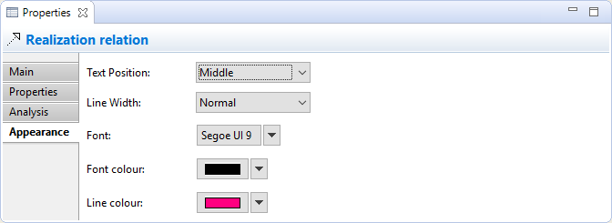

Sélectionner une relation dans une vue signifie que vous pouvez modifier ou consulter des propriétés visuelles additionnelles dans la fenêtre des propriétés. Différents réglages visuels peuvent être appliqués à une relation pour chacune de ses occurences dans une vue. Par exemple, la relation "Utilisé par" peut être dessinée en noir dans une vue et en bleu dans une autre.
L'onglet apparence
Modification des propriétés d'apparence pour une relation dans une vue
Cet onglet n'est disponible que lorsqu'une relation a été sélectionnée dans une vue.
| Position du texte | Indique la position du texte qui apparaîtra à proximité de la ligne dans la vue. Les options sont "Source", "Milieu" et "Destination". |
| Épaisseur du trait: | Définit l'épaisseur du trait de connexion. Les options sont "Normal", "Moyen" et "Épais". |
| Police de caractères: | Définit la police de caractères utilisée pour le texte de la connexion sélectionnée. Le bouton "Défaut" définit la police de caractères conformément à la valeur par défaut, comme défini dans les préférences. |
| Couleur de la police de caractères: | Définit la couleur de la police de caractères utilisée pour le texte dans la connexion sélectionnée. Le bouton "Défaut" définit la couleur de la police de caractères conformément à la valeur par dédéfaut. |
| Couleur du trait: | Définit la couleur du trait de connexion. Le bouton "Défaut" définit la couleur du trait conformément à la valeur par défaut. |